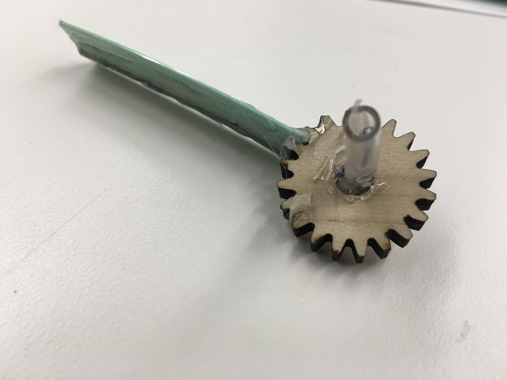
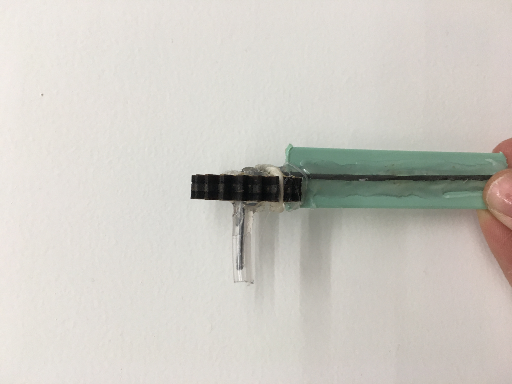

This week, I wanted to make a night light with stars in a hexagonal box.

The box was made using an online box generator. It is a polygon box with fingers to hold together big enough to hold a breadboard inside. I was hoping to make the switch external to avoid having to open the lid, however this may be difficult since I will have to connect it to the breadboard indirectly. I am also trying to brainstorm where to leave room for a port that does not affect the aesthetic, but I may just be able to put a battery inside the box to address this issue of powering the arduino.
 Circle patterns were cut all around the box save for the bottom to give spaced lighting. In the future I may want to use a transistor so I can add more LEDs for more light.


The end goal was to make a cute night light.